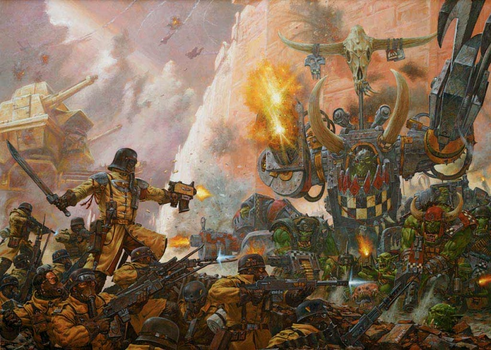

Warhammer 40k: Dawn of War sau inițierea în estetica grimdark
“Every moment of anger, hate, deceit, pain, suffering, pleasure, and desire is mirrored in the power of Chaos. When its legions march, they march to return upon us a ruin that is of our own making.”
Dacă veți întreba veterani ai jocurilor de strategie care sunt niște titluri definitorii pentru subgen, mulți vor arăta înspre Blitzkrieg, Command and Conquer sau Dune II, și puțini înspre Warhammer 40k: Dawn of War. Dawn of War este poate cel mai subapreciat joc de strategie din punct de vedere al influenței sale - dar mai ales, ca joc video capabil de a întrupa un univers fictiv. Lansat acum 16 ani și devenit fundație pentru a două cea mai jucată serie RTS din istorie (Company of Heroes), Dawn of War 1 rămâne și azi o experiență polarizantă: Nu poți să iubești Dawn of War fără să ajungi fan Warhammer; la fel cum nu poți să iubești Warhammer fără să fii, cel puțin în parte, apreciativ la adresa Dawn of War.
Dintre toți colegii de pe vremea liceului, majoritatea pasionați de strategii, eu am fost singurul obsedat de Dawn of War. Mi-am dat seama de atunci că în sufletul altora acest un alt univers, cu exageratele sale accente și grămezi de facțiuni razboinde, avea slabe șanse de a se insera alături de mai literatul Lord of the Rings, dramaticele Starcraft și Warcraft sau alte lumi fantasy încă de pe atunci promiscue.
Prima remarcă la adresa seriei Dawn of War este zelul cu care își expune universul. DoW nu este o strategie în care facțiunile sunt doar scuze pentru diferite stiluri de joc. DoW este o strategie în care specii, dogme și atitudini se întâlnesc la absolutul lor paroxism. Titulatura „40k” - pe lângă faptul că indică petrecerea acțiunii la 40 de milenii după universul Warhammer Fantasy (jucabil cel mai recent prin seria Total War: Warhammer), este și o titulatură metaforică pentru cotele hiperbolice la care noțiunile de umanitate, tehnologie și razboi își găsesc întâlnirea.
În ciuda aparențelor, Warhammer 40k nu este doar un carnaval power-fantasy. Originând în spațiul jocurilor tabletop, avem deja trei decenii când lore-ul Warhammer se dezvoltă fără încetare, acumulând tensiuni și consistențe greu de rezumat într-un simplu articol. Influențând nenumărate alte francize (precum mai sus amintitele universuri Blizzard), Warhammer este poate cel mai bun candidat la postura de arhiereu al ficțiunii „grimdark”, poziție greu de atacat în scris - dar pe care i-o vom analiza aici, sperăm, cu o smerită subiectivitate.
Al doilea lucru pe care îl vom studia astăzi este întrebarea: De ce iubim Warhammer? Încercăm să-i răspundem și acesteia doar în parte - voind a oferi nu doar niște validări pasionale fanilor, cât și niște posibile căi de intrare pentru cei încă neatinși de dragostea Împăratului.
Acest articol este astfel devotat seriei 40k a universului Warhammer, folosind Dawn of War drept cale de a-l experimenta. Totodată, vom apela artwork-uri și lorebase-uri ale comunității pentru a obiectiva mizele simbolice și imaginative are universului WH40k. Nu mă voi bagă în fenomenul tabletop în care sunt neinițiat - și nici peste catedra de Warhammer Fantasy, operată deja strălucit de un specialist al forumului. Să ne aplecăm deci asupra subiectului, prin grijă atotprezentă a Părintelui Nu- Împăratului.
(Pentru cine are chef și prilej de o lectură mai imersivă, am pregătit și ceva muzică de rulat pe fundal)
Urzeala Tronului
În WH40k Umanitatea și Calea Lactee au trecut de stadiul lunii de miere. Răspândită în aproape întreaga Galaxie, Umanitatea (a se nota capitalizarea) este un Imperiu de proporții și afluviuni titanice. Să facem un index aleator: Planete-industriale cu trilioane de locuitori. Nave interstelare kilometrice construite ca niște catedrale închinate Tehnologiei. Sute de legiuni armate numărând milioane de trupe și trimise în Cruciade interstelare. Zeci de corpuri inchizitoriale, de ingineri-preoți, modelatori genetici și oracole cibernetice. Doctrine de fier și culte închinate Spiritului-Mașinărie. Telepați ce pot deschide porți demonilor cu un gând rebel și sicrie blindate ambulante ce duc soldați reanimați în luptă. Oficii de asasini, fabrici de arme tămâiate zilnic, tehnologii străvechi dar avansate cărora nimeni nu le mai cunoaște skepsisul (…) Et cetera.
Depășind șocul exagerărilor, observăm în primul rând abolirea totală a granițelor dintre Știință, Magie și Religie, poate cel mai anti-Montesquieu univers cu putință. În WH40k, istoria umanității a evoluat de parcă Revoluția industrială s-a produs sub oblăduirea Bisericii Catolice, fără nicio Renaștere la mijloc și fără cea mai mică urmă de Iluminism. Împăratul, în înțelepciunea sa, a abolit orice cult, școală, știință sau religie, altele decât cele sancționate oficial de Inchiziție. Astfel, dezvoltarea tehnologică a umanității s-a produs exclusiv prin canonul Cultului de Stat, în fruntea căruia, peren (dar nu și intact), Împăratul domnește.
În al doilea rând, observăm scala incomensurabilă a forțelor militare și dimensiunile economice și sociale de neconceput ce-i stau, bineînțeles, drept baza. Deși tema principala este Războiul, universul narativ 40k nu face abstracție de dinamica lumilor numeroase ce îl compun, populate de nenumărate suflete ce trăiesc, mănâncă și respiră ca oriunde altundeva. Datorită scalei la care se reprezintă, soarta de rând, a popoarelor și chiar a unor întregi sisteme solare ajunge, uneori, un detaliu pe fundalul marilor evenimente. Asupra acestora aspecte vom reveni mai târziu.
Bineînțeles că o asemenea organizație precum cea a Imperiului nu are cum să ramâie întregită. În parcusul său de cucerire a galaxiei, Imperiul s-a fracturat în Mari Erezii, evenimente prin care Legiuni s-au întors împotriva Protopărintelui lor (genetic, și nu doar spiritual) din pricina influenței Haosului. Ca și concept și antagonist deopotrivă, „Haosul” este reprezentat în Warhammer sub formă a Patru Zei/Forțe demoniace: Khorne (Războiul), Nurgle (Pestilența), Slaanesh (Hedonismul) și Tzeentch (Schimbarea sau Magia). Fiecare dintre acești Zei/Forțe au personalități și supuși proprii, mișcări pe care le influențează în Galaxie în vederea sporirii lor, uneori antinomice. Asemănarea dintre cei aceștia și cei Patru Călăreți ai Apocalipsei după Ioan din Creștinism este oarecum validă, ambele cvartete fiind în fond consecința metehnelor făptuite în Univers de către vietăți. Nefiind deci niște simpli adversari, Forțele Haosului sunt principii sistemice apărute ca răspuns la proliferarea spre cote galactice a respectivelor vicii, vicii asupra cărora cei Patru Zei sunt patroni și manifestări deopotrivă.
Această oglindire a „răului” ca principiu acosmic este datorată felului în care Warhammer explică magia și capacitatea ființelor sentiente de a interacționa cu realitatea. În Warhammer, gândurile, faptele și intențiile toate generează fluxuri și schimbări într-o dimensiune paralelă denumită „Warp”. Aceast Warp este, în fond, echivalentul Warhammer pentru inconștientul colectiv menționat de alchimistul renascentist Parcelsus și „certificat” de psihologul Carl Gustav Jung în secolul XX. Astfel, în baza unor evenimente istorice extrem de nefaste ale trecutului Warhammer, excesul, răutatea și crimele ființelor vii au generat energii atât de puternice în Warp încât cei Patru Zei au luat naștere ca niște Athene diabolice penetrând fruntea realității. De atunci și până în prezent (mileniul 42), Haosul rămâne cea mai mare amenințare la adresa umanității, corupând și dislocând Galaxia în mii de facțiuni razboinde, de erezii și revolte.
Dar Haosul nu este singura amenințare; și nici oamenii singurii care se apără. Deși a început din perspectiva Imperiului Uman, lore-ul Warhammer s-a dezvoltat pe seama a nenumărate rase inteligente; câteva deja stârpite de cruciadele Împăratului, celelalte - tonici adversari. În galaxia 40k găsim numeroase specii extraterestre, rase robotice și hoarde monstruoase, toate având ceva de împărțit ori cu Împăratul, ori între ele. Toate constituie și obiectul Inchiziției Imperiale, organ unic religios și politic, capabil să decidă sorțile a mii de lumi. Inchiziția este cea care declanșează cruciade asupra ereticilor și asupra „xenoșilor” necurați, trimițând forțe de dimensiuni mitice să distrugă sisteme pătate de Haos, sau prin simplă clauză a neumanității lor.
Cu toate astea, dimensiunile excesive ale universului Warhammer 40k vorbesc adeseori împotriva - și nu în cinstea valorilor după care facțiunile sale se orientează. Jucând jocurile sau citind nuvelele, experimentezi tragedia, strădania și martiriul unor specii a căror unică interfață este și rămâne de milenii întregi - războiul. Războiul nu este o narativă forțată, ci unica realitate ce mai poate contrasta cu fundalul de proporții titanice; unicul dialog rămas între niște puteri prea mari ca să-și mai asume ceva în afară de măreția lor. Hypertehnologizarea, abnegarea totală de sine și lipsa oricărui dumnezeu cu excepția celui care îți suplimentează muniție fac din Warhammer 40k o lume a culmilor negative; o lume pe care umanitatea, ca și orice specie inteligentă de altfel, o poate crea evoluând neponderat.
Dar Warhammer 40k nu este cunoscut pentru profetism, ci pentru nonșalanța cu care izbutește să împingă concepte clasice de fantasy spre limita lor absolută. Diferența dintre utopie și distopie se topește în febra războiului etern, iar ceea ce rămâne este pură stare de fapt; de unde și deviza seriei: „For in the grimdark future there is only War”. Și astfel ajungem la Dawn of War I.
Toate-s vechi şi nouă toate
Dawn of War I și expansiunile sale (Winter Assault, Dark Crusade și Soulstorm) ne-au adus în total 9 facțiuni jucabile, fiecare cu rostere și specializări foarte diferite. Nu o să le aprofundăm pe rând deoarece nu este scopul acestui articol, dar trebuie vorbit câte ceva despre fiecare în parte că să aflăm cum arhetipiile lor sunt strălucit ilustrate de joc.
În parte, Warhammer 40k reiterează facțiunile universului Warhammer Fantasy, reformulându-le după ceea ce par a fi evident 40 de milenii de conflict neîntrerupt. Imperiul lui Sigmar este aici interstelarul Imperiul Uman - cu zeci de subfacțiuni asimilate și tehnologii sectare luate din mers la bord. Gândiți-vă la un fel de Imperiu Romano-germanic ajuns în era FTL, și care trecând de mult de stadiul „civilizării” acum caută să se mențină și curețe de adversari. Orcii sunt, ei bine, tot Orci, numai că denumiți „Orki”; o schimbare, iată, vitală, ca și în cazul distincției dintre zeitățile lor: Gork și… Mork. Rasa veche - High Elfii - e și ea prezentă în era laserelor și a săbiilor-drujbă sub denumirea tolkienească (sic) de „Eldar”, exprimând același amestec de noblețe, aroganță și marțialitate - doar că acum sub apanajul unor tehnologii de-a dreptul sadice. Confrații lor, violatori și agresori de profesie, se află și ei împliniți de era 40k, ajungând să facă piraterie cu întreaga Galaxie. Un aspect interesant aici este că linia dintre Eldar și Dark Eldar este și mai ștearsă decât în universul Fantasy, acțiunile Eldarilor făcându-i de multe ori indistincți față de rudele lor ingrate.
Continuând, întâlnim Sisters of Battle (Space-Marine în versiunea Amazoance) și Garda Imperială (Legiunile „standard” ale Imperiului). Acestea reprezintă două din armatele auxiliare ale Împăratului, operând în teatre distincte în funcție de scopul și durata crimelor. „Adepta Sororitas” sunt de obicei trimise de Inchiziție pentru operațiuni unde bărbații sunt considerați prea amatori de jucat table cu Tzeentch, vreme ce Garda Imperială este de găsit pe mai orice planetă unde oamenii au (sau nu au) treabă.
Haosul acționează în Galaxie prin Legiunile damnate de Space Marines, fiecare aflate în diferite grade de posesie demonică. Soldați deformați, cu armament excrescent din trupuri, Comandanți pe jumate belzebubi, mașinării infernale ce funcționează doar pe Acces Direct - Chaos Space Marines dețin tot ceea ce îți poți dori, cu condiția să nu te mai dorești pe ține însuți.
În final, mai întâlnim două rase: o rasă mezină de umanoizi - și o a două, antică, originând ca și Eldarii din zorii Universului 40k. „Tânăra speranță” este Tau - o confederație de triburi hypertehnologizate, aflate la marginea Galaxiei - deci mai mereu în defensivă. Acesta este motivul pentru care cam tot arsenalul lor este compus din arme de distanță, fiind poate cea mai dezvoltată rasă tehnologic, dar nedornică să se dezlănțuie în afară granițelor dictate de „Binele Suprem”. Ce-a de doua… ei bine… nu e nici măcar vie. Necronii sunt, în fond, versiunea SF a Tomb Kings din universul Fantasy. Dacă asta nu va sperie destul, aflați că Necronii sunt o rasă de roboți și-au vândut sufletul unor zei tenebroși (alții decât zeii Haosului…) și că sunt răspândiți în întreaga Galaxie, dormind cu milioanele sub scoarța unor planete funerare, așteptând să se trezească în ziua propriei lor versiuni a Judecății de Apoi, aceea în care toată viața organică nu se vrea atât a fi reînviată cu trupul, cât deposedată de atomii constituenți.
…Mai există și o a zecea rasă, dar care și-ar dori opusul: asimilarea totală a întregii mase biologice a Universului într-un singur organism. Poate vă sunt cunoscuți verișorii lor de inspirație Blizzard, dar momentan - de ei nu vorbim. Nu doar pentru că nu îi găsim în Dawn of War 1, (deși poate un viitor articol ne va arăta cum…), dar și pentru că ne-am întins suficient cu enciclopedia. Aflați doar că dacă Haosul e explicitarea mitologică a celei de-a doua Legi a Termodinamicii, Tyranizii - căci așa se numesc micuții iubitori de integrare în absolut - par a fi narativa unei Apocalipse scrise de Darwin. Ultimu’ care stinge becu să-și lase ADNul la ușă.
„Blessed is the mind too small for doubt”
Acum că am făcut un crash course în ethosul 40k și al facțiunilor din DoW 1, putem să ne întrebăm „cum poate un RTS să reprezinte toate aceste lucruri?” Știm că în orice joc conceptul de suspensie a neîncrederii este primordial. Atunci când în Warcraft 3 conduci 5 orci și un troll, îți închipui că mânuiești soarta întregii Hoarde. În Starcraft 15 zerglingi și 3 hidralișci îți conferă suflul întregului Hivemind. Șamd. Respawn-urile de trupe simulează de obicei numerele mari ale armatelor invocate, vreme ce engage-urile din Skirmish simbolizează conflicte mai ample, aflate în implicitul imaginației stimulate de joc. Astfel, ca în orice RTS, conflictul de pe ecran capătă sens în Dawn of War și în măsura în care reușește să se extindă dincolo de limita ecranului de calculator. Acest fenomen, făptuit în tărâmul imaginației jucătorului, este generat și susținut prin intermediul lore-ului contextual: voice acting (reactiv și proactiv), descrieri de unități, loading screen quotes, etc - detalii ce dantelează și oferă credibilitate conținutului ilustrat.

Nucleul prin care orice RTS se reprezintă pe sine îl vom exprimă aici prin intermediul a trei chiasme conotative: chiasmul vizual (cum o unitate arată, se mișcă și se controlează), chiasmul auditiv (replicile verbale sau onomatopeice, combat sounds) și chiasmul operativ (combat stats, cost, countering, lorefulness). Toate aceste „încrucișări” dintre formă și conținut sunt menite să asigure un feedback constant, capabil să susțină interactivitatea externă (dintre jucător și joc) în strânsă relație cu cea internă („balance și counter” între facțiuni, fondul conflictelor ilustrate).

Aici Dawn of War izbutește magistral să reprezinte ceva ce transcende forma experimentării. Populând hărți credibile cu doar câteva duzini de unități, Dawn of War conferă sentimentul că un conflict cosmic se scoboră pe suprafața unei planete. În fiecare facțiune găsim trei clase de unități: Squaduri, Eroi și Vehicule. Squadurile, simbolizând detașamente de infanterie, pot fi extinse ca număr (reinforced) și echipate pe parcursul jocului cu armament variat, în funcție de natura amenințărilor adverse. Eroii și vehiculele pot și ele obține numeroase specializări și abilități prin intermediul research-ului operat in-game la clădiri dedicate. Astfel, sistemul de reinforcement și upgrade simbolizează foarte eficient stagiile de operațiune ale unei armate aflate pe orbita unei planete contestate: Recon (early game), Engagement (mid-game) și Commitment (end-game). Datorită acestor mecanici, fiecare Skirmish din Dawn of War se simte ca o mini campanie de cucerire a unui sector, augmentând astfel semnificația și miza meciurilor individuale.
Grafic, jocul amestecă decoruri megalitice și texturi de teren zgripțuroase cu un fog-of-war amenințător, generând rațiuni ambientale ce justifică prezența forțelor pe hărți. Astfel, ne este foarte ușor să ne imaginăm de ce un detașament de Space Marines pătrunde într-un vechi oraș imperial, infestat de Chaos; sau de ce o divizie de Eldari în căutarea unui artefact se poate trezi cu valuri de Necroni de sub nisipuri. Nefiind atât gândite pentru „sportivitate” (fairplay sau simetrie forțată) cât pentru credibilitate funcțională, hărțile pot fi jucate sub forma clasică de Annihilation (distrugerea bazei adversarului), sau Capture and Hold (menținerea unor puncte strategice pe harta în detrimentul opozantului). Acest al doilea mod de joc, devenit emblematic pentru RTS-urile moderne, oferă un model ce justifică și explică Skirmish-ul ca parte strategică a unui conflict mai amplu. Calitățile ludice ale jocului contribuie astfel la credibilizarea universul din care fac parte.
„Suspensia neîncrederii” de care vorbeam devine astfel vitală pentru Dawn of War, un joc care caută să redea un întreg epoche de conflict. Unitățile, ilustrate cu devoțiune față de modelele tabletop, reușesc să își exprime identitatea nu doar grafic, dar mai ales în mod retoric, auditiv. În DoW, replicile audio dublează apartenența individuală a unităților din pluton, dar și contextul ierarhic și ideologic al facțiunii din care fac parte. Dacă soldații imperiali își exprimă uneori bombănitor loialitatea, Space Marines și trupele de elită vor răspunde cu replici încărcate de zel și religiozitate marțială. Până și mașinăriile Împăratului vor mărșălui declarându-și devoțiunea față de El. Opușii lor, Chaos Marines, vor scoate cele mai oripilante și întortocheate replici de care ați avut parte într-un RTS, afirmând falsa autoritate a Împăratului. Eldarii și Tau se vor menține „nemuritori și reci”, vreme ce Orkii vor face mai mulți jucători să radă cu poftă prin suburbanitatea lor candidă 1. Ceea ce dezmiardă este că după ore întregi de joc, derulate pe strălucitorul soundtrack marca Jeremy Soule, sunetul din Dawn of War 1 nu ajunge să ne plictisească, așa cum se întâmplă cu alte RTS-uri. Multe unități ne pot surprinde și după zeci de ore cu replici noi, unele chiar contextual adresate pe seama inamicilor cu care se întâlnesc. Sunetul insuflă astfel jucătorii cu miza și intensitățile fiecărei facțiuni, denotând o puzderie de nuanțe, stări și atitudini, și împuternicind jucătorul în acțiunile sale.
Vizual, unitățile se mișcă proporțional cu dimensiunile și natura lor. Substanța fiecărei unități (organică, mecanică sau mixtă) este sugerată prin felul în care se controlează, sentimentul de greutate al fiecărei trupe fiind magistral livrat de joc. Forța unui Wraithlord sau tonele unui Dreadnought avântat în luptă se simt efectiv atunci când îi controlăm, iar impactul unui Erou este adeseori orgasmic, mai ales prin seama celebrelor execuții în sincron pentru care seria este recunoscută. Din fericire, nici aici nu găsim promiscuități gratuite: fiecare unitate, oricât de puternică, este justificată cât se poate de newtonian prin proporțiile și armamentele echipate 2. Tooltip-urile fac o treabă pe cinste în a reda înțelesul tehnico-militar dar și ideologic al ororilor „deployate” pe câmpul de luptă, deseori dezvăluind designul pur adversarial al unor armamente - și ca urmare - „ekstasisul” fiecărei facțiuni, zelul prin care își combate inamicii nu doar reactiv, dar și profilactic, pe baze identitare.

Din punct de vedere gameplay unitățile reușesc să se întâlnească într-un soi de echilibru - cel puțin în early-to-mid game. Spre sfârșitul meciurilor, întregi legiuni și monstruozități tehnologice sau organice vor popula ecranul de calculator, bineînțeles supuse regulii de aur: rock-paper-scrissors (vehicule-infanterie-eroi). Cu toate acestea, numeroasele upgrade-uri in-game permit fiecărei unități să se diversifice, iar armatelor ca atare să se îmbrace sub diferite forme operative, totul în limita unui population cap. Un exemplu grăitor este Garda Imperială, care poate lansa compoziții diverse, de la orchestrări de infanterie distinct echipate, până la combinații de blindate, trupe de șoc și vehicule utilitare. Putem construi numerose defensive, buncăre și fortificații; iar în cazul unor facțiuni, putem utiliza și mecanici mult mai surversive (câmpuri stealth, transporturi blindate, artilerie orbitală, summoning, teleportări de unități, magie etc). Dimensiunea tactică a jocului este superb executată, având căi continue de (re)adaptare a câmpului de luptă. Astfel, în DoW nu cantitatea de clickuri-pe-secundă sau numărul de rushing units decide meciul, cât promiscuitatea tactică de a întâlni adversarul cu aranjamente minuțious uneltite. Skirmishurile se aseamănă unor meciuri de șah în care, spre final, zeci de piese sunt azvârlite unele asupra celorlalte cu satisfacția unui demiurg voyeur. Build-up-ul este mult mai consistent decât în alte RTSuri, jocul fiind proiectat să descurajeze rush-urile și exploatările de moment, favorizând în schimb întâlniri grandioase.
Combatul este physics-based, cu mai multe tipuri de damage, fiecare atac (proiectil sau melee) având impacturi specifice. Mai toate unitățile pot suferi upgrade-uri în-game, oferind multiple căi de răspuns prin intermediul aceleiași unități. Combinatoric, rezultatul este amețitor - nu doar funcțional, cât și enciclopedic. Reprezentând cu hărnicie unitățile din tabletop, Dawn of War te transformă aproape fără voie într-un lore-freak: fiecare unitate nu posedă doar capacitate de luptă, cât și un grad de încărcătură doctrinară, în concordanță cu specificul facțiunii de care ține. Cu alte cuvinte, stats-urile unei unități din Dawn of War sunt dublate de puritatea conștiinței sale ca entitate exclusiv destinată războiului, de ființare intolerantă altei-ființări. Un exemplu îl constituie trupele de elită ale Inchiziției, Grey Knights, menite să purifice Galaxia de orice demon sau specie nonumană și care au, în joc, replici audio pentru aproape fiecare adversar în parte. Sau diabolicele mașinării ale Necronilor, chirurgical proiectate spre a contra în mod absolut trăsături organice. În DoW controlăm iobagi cu furci-laser sau recruți amărâți; chiar și cele mai low-level unități sunt, în mod sensibil, costuri imense, rațiuni întregi puse în mișcare. Această inflație de specializări și dotări tehnologice permite jocului să aducă în endgame și unități „legendare”, nenorociri specifice fiecare rase și care odată deployate (cu condiția capturării unor puncte speciale pe hartă), asigură nu doar haos militar pe câmpul de luptă, dar și un soi de apocalips al skirmish-ului ca atare, forțând prin potența lor înclinarea jocului într-o direcție.
Am folosit în această analiză termenul de chiasm (încrucișare a două procedee ce face posibil întregul - ca în cazul chiasmului ocular, unde nervii optici sunt încrucisați și permit simultaneitatea vederii) pentru a ilustra astfel conlucrarea fenomenologică dintre prezentare, mecanici și gameplay, respectiv lore-ul, accentele și semnificațiile fiecărei facțiuni. Un alt exemplu de înfăptuire a acestei parități este acela al interfeței și al meniurilor. Acționând ca niște diorame, loading screen-urile ne expun frânturi din alte lupte, sugerând istoricitatea ciocnirilor dintre rase, și skirmishul ce urmează ca o veriga a unor întregi lanțuri de conflict. Citatele abundă prin meniuri, adăugând și ele densitate, și făcându-ne să simțim că pătrundem într-o lume ce există deja înaintea de pornirea jocului, și care va persista în mod independent, în sinea poveștilor sale, și după ce îl vom închide.
Acest izomorfism dintre combat stats, impact (vizual, auditiv) și „lorefulness” este, în fond, ceva ce orice RTS urmărește, anume, justificarea unităților și a fiecărei facțiuni în baza mizelor și a identității prin care ele intră în dialog combativ. Nicio strategie nu poate exista într-o stare de „non-combat”; căci din punct de vedere creativ, „conflictul” (chiar și simbolic) reprezintă catalizatorul prin care jucătorul este determinat să se arunce cu propria sa realitate în arena imaginației, acolo unde actorii și imersiunea se pot naște și, ca urmare, satisfacția de a ii controla în teatrul acțiunii - bucuria de a juca.
Primdark fantasy
Prin virtutea calităților sale de gameplay și de reprezentare, Dawn of War I efectuează ceea ce putem numi „o inițiere în estetica grimdark”. În ultima parte a articolului vom încerca să demonstrăm acest fapt, analizând genetica acestui subgen și a felului în care Warhammer 40k a înscăunat (dacă nu chiar co-creat) estetica grimdark în media mainstream.
Vedem după anii 90 o sumedenie de scrieri, filme și jocuri ce anunță acest subgen de ficțiune. Dar este ușor să tratăm ceva din trecutul apropiat ca pe un „dat”, fără a-i socoti influențele și mizele ce i-au stimulat creatorii. În același fel în care Diablo nu ar fi putut exista fără Legend of Zelda dar nici fără Paradisul Pierdut al lui Milton, nici seriile Warcraft, Starcraft, DOOM sau Gears of War nu ar fi fost posibile fără Warhammer. Astfel, găsim azi în spațiul jocurilor video un întreg val atribuit subgenului „Dark Fantasy”, adus pe scenă de jocuri precum Gothic și Witcher și continuat de serii ca Dark Souls, Dragon Age sau Dragon’s Dogma.
Evoluția acestui subgen a pornit chiar în anii 80, atunci când creatorii Warhammer, construind pe umerii unor giganți ca Frank Herbert (Dune) și Tolkien (Lord of the Rings), au reinventat formula „Dark Fantasy” popularizată în anii 70 de celebrul Dungeons and Dragons. Primul lucru pe care autorii Warhammer l-au făcut a fost ca, pornind de la arhetipurile fantasy ale lui Tolkien (Elfi, Orci, Dwarfi, etc), au re-prezentat aceste rase prin alte mitologii, originale sau derivative, și divorțate de rădăcinile semi-istorice (mitopoetice) ale lui Tolkien (inspirat la origine din folclorul vechilor popoare scandinavice și celtice). Ca și D&D, Warhammer a oferit noi valențe și sub-caracteristici raselor „clasice”, plasându-le în schimb într-o lume post-apocaliptică, una în care „Răul” (sub forma Haosului) a penetrat lumea încă de la formarea ei (fiind chiar responsabil de apariția raselor și de existența unor concepte de baza precum Magia 3.

Al doilea lucru pe care Warhammer l-a inaugurat ca și dinamică fantasy a fost deconstrucția arhetipurilor ideale predate de Tolkien. În Warhammer nicio rasă nu este „bună”, „pură” sau complet „de partea Luminii”. Desființând idealismul inerent creației lui Tolkien (părintele mitologiei „seculare”), Warhammer a început să-și „umanizeze” rasele, atribuindu-le tuturor caracteristicile, cele mai răspândite, iată, ale umanității - așa cum au fost ele mărturisite de societatea secolului XX: lăcomie, ostilitate, imperialism, despotism, impulsivitate, ideologizare, respectiv transumanism și hyperindustrializare. Dacă Tolkien a încercat să „revrăjească” mentalul colectiv, să spele urmele celor două războaie mondiale cu frumusețea lichidă a lumii de basm antebelice, Warhammer (și cu atât mai mult, Warhammer 40k) caută să păstreze oglinda mentalului colectiv intactă, retușând în schimb pe ea contururile metehnelor istorice și construind din dâre un viitor determinat de exagerarea lor. Astfel, noi tonalități și motive până atunci rar ilustrate în universuri fantasy au găsit viață prin Warhammer.
Fiind deliberat absurd și hiperbolic, Warhammer funcționează ca un univers antitolkien, un antiidealism menit să ne confrunte și sufoce cu propriile noastre caracterizări și tendințe, în speranța eventuală a unei purificări cathartice. Desigur, vedem aici și fetișizarea răului ca un soi de „contra-fantezie”, asemănătoare jocurilor cu figurine din copilărie în care inamicii de plastic ai lui Batman îl înfrangeau pe podeaua de pe sufrageria bunicilor; ca un soi de satisfacție nonpredicativă. Dar în plus față de această răsturnare ludică, Warhammer 40k postulează preeminența Răului asupra Binelui nu ca pe o descompunere narativă - ci ca pe o paradoxală hypermitologizare, un existențialim accelerat ce vrea să ilustreze „răul” ca pe ceva universal și contingent (entropic) ființelor sale; de unde și dinamica de conflict perpetuu ca o stare de fapt ce urmează acestei condiții.
Astfel, estetica grimdark operează simultan mai multe registre ale istoricității noastre, straturi explorative ce până la apariția Warhammer nu își găsiseră o formă propice de expresie (sau de refulare). Și deși putem vedea multe din aceste atribute ca pe niște „debordări” creative, ele conțin în fapt metafore valide și bagaje culturale greu de abnegat. Influențând în continuare nenumărați artiști și creatori, Warhammer a colectat de-a lungul deceniilor o puzderie de motive și referințe (istorice, filozofice, artistice), conservându-le ca într-un chihlimbar prin incastarea în propriile arhitecturi narative. Din acest motiv îmi doresc ca în ultima parte a acestui articol să operăm împreună o „arheologie” a universului WH40k - din dorința de a releva vitalitatea și patosul actorilor săi, dar și genetica ce dă ființă seriei Dawn of War și oceanelor (cărți, ilustrații, filme de animație) de inspirație 40k.
<incoming transmission>
Pentru claritatea și cursivitatea acestui articol, am să expun pe rând ceea ce consider a fi „straturile” de însemnătate ale Warhammer, străduindu-mă să ofer celor interesați o arheologie ideatică a universului 40k, și, prin extensie, a genului Grimdark născut ca atare. De dragul indexării vizuale, fiecare concept cheie și baza a identității 40k vor fi mai jos subliniate cu bold.
Primul lucru pe care trebuie să îl facem este să consemnăm menirea termenului de „estetică”. Înțeleasă de Aristotel ca fiind facultatea prin care simțurile se lasă afectate de obiecte, estetica e numită știința lucrurilor frumoase. Dar uitându-ne la Warhammer 40k vedem că frumusețea poate fi un concept mult mai larg. Spre exemplu, pentru un fan Warhammer sau pentru unul Warcraft, aceste imagini, în mod respectiv, pot fi deosebit de frumoase și de estetice:

; vreme ce pentru un om neinteresat de poveștile din spate, imaginile de mai sus pot părea de la „grotesc” la exagerat și penibil. Este evident atunci că estetica nu este doar o calitate a imaginii în sine (vizuale, auditive, poetice, etc) ci o combinație între stilul, însemnătatea și enigma din spatele imaginii. Acestă enigmă poate fi o poveste necunoscută, o forță narativă sau un mister încă nerezolvat. Toate aceste componente dau împreună magnitudinea reprezentării oferite, în conformitate cu receptivitatea observatorului pe fiecare dintre paliere. Astfel, anumite reprezentări „urâte” pot exprima și calități ale „frumosului” - asta în măsura în care detaliile livrate (de multe ori excesive) abundă cu sens, contraversie și istoricitate; putând chiar constitui un bagaj deseori mai mare decât în cazul corespondentelor lor „frumoase”. Această este una - și poate prima dintre mizele arheopitice ale identității Warhammer 40k, aflată în strânsă legătură cu antiidealismul descris mai sus ca răspuns la Tolkien. Acest strat, cel mai din exterior al identității Warhammer 40k, este estetica urâtului.
După cum am povestit mai sus, în Warhammer 40k nu există „bine” și „rău” absolut; urâțenie și frumusețe obiectivă. Singurele caracteristici universale sunt xenofobia, lupta pentru înarmare și dorința de supraviețuire. Toate aceste lucruri nu pot naște „frumosul” decât ca o serie de contraste hiperbolice, un sentiment al incomensurabilității amestecat cu șocul exagerării și magnitudinea cinetică a întâlnirii. E un soi plăcere pornografică, născută deasupra cotelor normale cu care alte universuri de obișnuiesc.

Observând doar puțin arta jocurilor și a materialelor tabletop ce le-au inspirat, chiar și un om nefamiliarizat cu estetica Warhammer vede în ea caracterul deliberat și promiscuu al acestui univers fictiv. Grotescul ilustrat prin majoritatea forțelor și a armamentelor din 40k este consecința exagerării operativității lor. Luând din nou cazul Gărzii Imperiale, vedem la ei (poza de mai sus) o amplificare a motivelor Primului Război Mondial: armate de dimensiuni biblice, artilerie titanică, muniții neconvenționale, și stil vestimentar preeminent ergonomiei.
Caracterul grotesc al multora din unitățile și personajele 40k, înțeles conform definiției ca ceva „bizar, caricatural, nenatural”, devine aici un grotesc operativ. Cu alte cuvinte, o mitralieră montată pe umărul unei căpetenii de Orki nu este doar o amenințare vizuală, ci și o forță balistică reală și de temut. Mai mult, colții, fiarele, armurile țepoase, săbiile-drujbă, implanturile - toate sunt instrumente utilizate tête-à-tête în Warhammer 40k. Deși armele de distanță sunt larg folosite, multe unități sunt rămân specializate pentru lupta corp la corp. Acest diferențial risc-impact nu este o simplă „epopee epică”, în care trupele aleargă constant pe lângă gloanțe și lasere fără a fi rănite. În 40k armurile sunt deseori mai puternice decât armele, și că urmare multe unități (unele beneficiind și de teleportoare, jet-packuri și alte asemenea nebunii) sunt antrenate pentru a tăia puterea de foc în mod pieptiș. Luptele în 40k devine astfel un melanj între război convențional, conflict SF și bătălii medievale - alimentate bineînțeles de diversitatea trupelor și numărul aproape nesfârșit de combatanți.
Acest amestec între epoci, stiluri de luptă și de estetică ne conduce la următorul strat arheologic al identității 40k: medievalism. Până acum ilustrațiile cred că au vorbit deja destul în sensul acesta. Warhammer 40k a preluat „debușeul gotic” al literaturii de secol XX, cu ale sale redări dramatice, macabre și politice, și luând ca model de scenă marile vestigii medievale ale spațiului germanic și Romano-Catolic 4. Catedralele-Fortărețe ale Imperiului Uman din 40k sunt extinderi la nivel SF ale catedralelor gotice din Europa, iar Space Marines sunt, am putea spune, niște evoluții fictive ale modelului mixt cruciato-cavaleresc. Această fascinație este redată și de caracterul aproape „miniaturesc” al bătăliilor 40k, paradox ce caută să reprezinte cifrele incomensurabile ale conflictelor, asemenea unor tapiserii medievale (tapiserii pe care numeroase artworkuri, inclusiv loading screenurile din Dawn of War, le emulează). Diferența vitală este că în 40k aceste tapiserii sunt vii - și că nu armatele sunt reprezentate simbolic, cât simbolurile sunt întrupate de armate - lucru prilejuit de setting-ul science-fiction și prin tehnologiile doctrinare ale câmpului de luptă. Această hiperbolizare a elementelor sporește dinamica ludică a jocurilor 40k, permițând numeroasele combinații tactice și strategice, respectiv oportunități de power-play și roleplaying.

Cum bine poate fi văzut, elementul punitiv abundă în identitatea Imperiului, armatele sale fiind mișcate la ordinul și sub oblăduirea Marilor Inchizitori. Aici un alt conflict istoric, real, este abrogat de narativa 40k: clivajul dintre Biserica Catolică și Ordinul Templier. Așa cum și Reforma sau Iluminismul au fost omise, și celebrul proces al cavalerilor lui Hristos pare să fi fost „dezîntamplat” de istoria Warhammer; Space Marines fiind în fond versiunea imaginată a Cavalerilor Templieri în epoca interstelară. Astfel, o parte majoră a identității 40k se constituie prin templierism, sau mariajul funcțional și estetic dintre religios, politic și militar.
Aici mai intervine un fapt foarte intersant, și anume dimensiunea imnologică a retoricii folosite de 40k. Fiecare rasă vorbește prin numeroși comandați, preoți, conducători, inchizitori, oficianți sau lideri. Numeroasele nuvele și jocuri WH40k abundă în referințe ce se apelează reciproc, construind lore-ul într-un mod interconex. Citatele sunt un format emblematic de înțelepciune în 40k, adeseori conținând psalmi, maxime și cânturi de luptă. Caracterul psalmic sau imnologic implică uzitarea unui format poetic și melodic ce conferă simultan slăvirea dar și afirmarea unei poziții, gândiri sau ideologii. În Dawn of War, replicile unităților abundă în asemenea exposé-uri criptoreligioase, celebre fiind deja replicile unităților Dreadnought, printre care: „It is better to die for the Emperor than to live for yourself”. Nu mai puțin cunoscute sunt și strigătele Forțelor Haosului, abundând cu blasfemii ale Zeilor întunecați. Această centrare pe scriptural și extatic constituie un prilej constant de inserare a nenumărate maxime în lore-ul 40k, fie de ordin filozofico-religios, fie din spațiul științe politicelor sau al istoriei militare. Comparați exemplul de mai sus cu maxima teologului creștin Ierotei, ucenic al Sfântului Apostol Pavel: „căci este mai bine să Îi aparținem Lui, decât nouă înșine”. Limbajul iconic și unional al soldaților evocă supunerea față de Împărat ca o formă de contopire cu El, - iar subiecții săi, legiunile, ca pe niște congregații de cruciați zeloși. Autoritatea și slujirea devin astfel sinonime - nu doar pentru oameni în Warhammer, dar și pentru celelalte rase, profund ancorate în societăți ierarhice și devoționale datorită dimensiunii lor.
Revenind la religie și politică, vedem cum ele sunt inseparabile în 40k - iar consecința afirmării ambelor pare să fie anularea lor reciprocă. Împăratul este în mod efectiv Suveranul dar și Divinitatea Supremă a Umanității (un fel de faraonism exagerat cuplat cu mesianismul antichității romane) iar armatele sale de clone - organe militar-devotionale. Prin pogorârea puterii imperiale în josul ierarhiei, orice suflet individual poate fi „blagoslovit” de dragostea Împăratului, credința acționând ca o forță telepatică în universul 40k - acolo unde Împăratul însuși este capabil să săvârșească ocazional miracole pe câmpul de luptă.

Tomurile și papirusurile atârnate cu lanțuri de armurile-exoschelet ale soldaților, lumânările puse pe computere și ghirlandele de manuscrise de pe lângă ecrane - toate sunt o mărturie a idolatrizării tehnologiei. Acest amestec între științific și arhaic expune persistența unui întreg registru de gândire - scriptural și afectiv - care în mod normal ține de antiteza științificului: superstiția. Rațiunea și superstiția nu mai par să fie în conflict în Warhammer, atât datorită dinamicilor SF ale universului și ale agenției credinței (Warp, demoni, magie, extratereștri, transumanism), dar și datorită incompletitudinii științei, ale cărei multe secrete s-au pierdut într-un așa zis „Ev Întunecat al Tehnologiei”. Din acest motiv, Inginerii-Preoți acționează ca niște „slujitori” ai tehnologiilor pe care sunt incapabili să le reproducă și pe care se chinuie să le recapete din lumi abandonate, săvârșind „cruciade explorative”.
Această dialectică între tehnologie și religios face din 40k un univers în care ambele se pot afirmă în egale proporții: atât științificul dar și fantasticul; de multe ori sugerând niște cosubstanțieri inconfortabile între cele două. Aici ar fi momentul să puneți pauză (cei care încă ascultați) muzicii tehnobabiloniene din introducere și să ne uităm împreună la acest scurt trailer, făcut pentru turn-based strategy-ul Mechanicus, lansat acum doi ani pe PC, o animație care evocă într-un mod strălucitor următorul nivel al identității 40k: Transumanismul.
Am spus deja cum în 40k epoca de glorie a Tehnologiei a apus deja. Rasele se află practic într-o eră post-tehnocrată, în care armamentele și instrumentele disponibile în prezent (mileniul 40) sunt o palidă reflecție a ceea ce exista în timpuri „străvechi” (mileniile 15-25). Warhammer 40k plasează coordonatele unui univers deja zdruncinat de problematica Inteligenței Artificiale și a războaielor om-mașină, conchisă cu interzicerea totală a mașinăriilor capabile de a se dezvolta singure. Tehnologia din era 40k este deci ceva remanent - dar în continuare titanică din punct de vedere al răspândirii sale și al aplicabilității. Depinzând în mod vital de ea, umanitatea este totodată nevoită să se și ocupe de toate aspectele sale în mod minuțios, de unde și armatele întregi de servitori, mecanici și ingineri ce există doar ca să o mențină funcțională. Dezvoltându-i un caracter misticoid, natura cenzurată a tehnologiei a condus universul într-un stadiu pe un sfert dieselpunk, un sfert cyberpunk și restul vrăjitorie.
Transumanismul Imperiului 40k este o involuție voluntară, mașinile neavând voie să dețină „conștiință” proprie. Tehnologia intră astfel și pe tărâmul necromanției, deseori fiind nevoie de trupuri și suflete vii spre a fi incastate în mașinării absconse și prea complexe (sau prea periculoase) pentru algoritmele digitale. Această fuziune între sub-genuri de ficțiune are la baza un element de ludism, sau teama existențială față de tehnologie și capacitatea ei de a ne oglindi propria alcătuire (o întreagă facțiune - Necron - fiind gândită întocmai pe această frică). La baza acestui complex stau, bineînțeles, literatura lui Orwell și a lui Isaac Asimov, dar și numeroase perspective originale ale creatorilor Warhammer privind natura intrisecă a tehnologiei și indistincția ei față de structurile gândirii religioase - deseori ca o ironie la adresa optimismului exacerbat al anilor 80-90 față de promisiunea digitală.

Însuși Împăratul Umanității evoca un aspect mesianic, moștenit cel mai probabil din „Dune Messiah” de Frank Herbert. Paralele hristice și hegeliene privind dialectica istorie-tehnologie și colapsul ei în tehnomesianism constituie poate unul dintre cele mai originale straturi ale universului 40k. La acesta se adaugă și alte două influențe estetice majore, dar asupra cărora nu vom mai zăbovi mult. Prima este cultura mecha, moștenită din anime-urile japoneze și vizibilă în tendința fiecărei rase de a construi superarme și titani mecanoizi. O vedem cel mai ușor la facțiunea Tau, în sine o fantezie Mecha. A doua influență este cultura gonzo, sau caracterul ironic, animaloid și uneori chiar suprarealist al esteticii Warhammer. Orkii, Chaos Space Marines și Tyranizii abundă în direcția aceasta, stilul gonzo evocând un element de randomness, hyperrealism și anxietate față de efectele entropiei și ale infinității asupra raselor vii. Gândite ca niște coșmaruri bio-mecanice, numeroase unități din Warhammer sunt, în fond, o contopire ce provoacă anularea categoriilor de ficțiune prin comasarea lor, un fel de „apogeu” al Science Fiction.
Astfel ajungem la ultimul strat al identității Warhammer 40k, și anume apocalipticismul de tip Lovecraft sau decadența treptată a protagoniștilor prin vecinătatea cu surse de entropie absolută. Pentru cei neștiutori, H.P. Lovecraft este unul dintre părinții genului horror fiction, un autor fără de care seria Warhammer, dar și o parte din fenomenul Science Fiction și artiști precum Stephen King, Alan Moore, Clive Barker sau H.R. Giger (și toate producțiile asociate lor) nu ar fi existat. În WH40k, Necronii, Tyranizii și Haosul toate reprezintă forme diferite ale aceluiași complex: Marele Necunoscut care încet dar sigur consumă Lumea datorită lipsei de timp sau a imposibilității ființelor vii de a cunoaște suficient încât să oprească marșul Entropiei. Vedem acest fapt nu doar în disoluția lentă a Imperiului Uman, dar și în incapacitatea celorlalte rase de a se feri de efectele ei - ori din cauza trufiei, ori datorită lipsei de vitalitate.
Așa cum poate fi văzut și din artwork-uri, estetica Lovecraft abundă în cazul multor unități, monstruozitatea și „monstruosul amețitor” fiind frecvent invocate. Dar spre deosebire de poveștile lui Lovecraft unde universul personajelor se încheie apoteotic prin sacrificarea conștiinței, în WH40k sfârșitul se produce lent, fagocitând ordinea universului prin acte aparent aleatoare, uneori dezvăluite ca parte a unor scheme mai largi. Acest artificiu narativ, pe de o parte, oferă autorilor 40k posibilitatea de a „câștiga” timp pentru a-și continua poveștile într-un ambient permanent tulbure și plin de evenimente dramatice. Pe de altă parte, polivalența și comportamentul capricios al „raselor lovecraftiene” permit petrecerea acțiunii într-un univers veșnic apocaliptic, un cosmos în care fiecare rasă devine, în fond, un posibil Sfârșit pentru celelalte. Astfel, în WH40k Apocalipsa este ceva continuu, cosubtanțial cu prezentul dar încet dizolvându-l – nu foarte diferit de eshatologia creștină, unde iminența Apocalipsei se susține prin concomitența ei cu prezentul „profan”, cum l-ar numi Eliade.
Probabil și datorită faptului că se petrece într-un timp purgatorial, WH40k operează și diferite forme de recaptarea a biblicului în spațiul SF, cel mai vizibil prin referințe în lore-ul Imperiului (Noul Testament) și al Eldarilor (Vechiul Testament). Nu am sa aprofundez și acest aspect, fiind deja menționat mai sus pe alocuri. Ceea ce țin să menționez – pe post de încheiere – este cum abundența de arhetipuri și referințe invocate transformă fiecare rasă din 40k într-o întruchipare parțială a celorlalte. Și deși asta se petrece mai în orice univers fictiv, în Warhammer volumul și multidimensionarea acestor intertextualități este năucitoare și fascinantă deopotrivă; făcând din Warhammer 40k o adevărată enciclopedie a lumilor SF, Fantasy, mitologice și cultural-istorice de care umanitatea s-a făcut sau se face vinovată. În acest sens, Warhammer este mai mult o acuză decât este o celebrare a creativității; un fel de triumf al normativului asupra spiritului creator. Ipoteza acestui articol, anume că Warhammer este, prin excelență, o antifantezie, sper că e oarecum demonstrată.
Dar un anti-ceva nu este niciodată lipsa acelui ceva, cât reprezentarea prin lumini de opoziție - uneori mai puternice și mai reziliente decât afirmările pozitiviste. Și pentru stresa acest punct, să adăugam și mai multă amețeală: fiecare rasă din lore-ul 40k are în sine zeci de subfacțiuni, fiecare cu substiluri, subidentități, distincte referințe culturale… et cetera, et cetera. Oare să fie și jucabile multe dintre acestea? Nu e suficient că Dawn of War ne-a oferit nouă rase mari și late pentru bătălie, mai mult decât orice RTS, atât în materie de lore dar și ca bogăție gameplay? E posibil ca o echipă de modderi ruși extaziați să fi petrecut 10 ani pentru a adaugă la numărul raselor zeci de facțiuni jucabile și unități din tabletop?? Acum, nu știu să va zic. Poate cu altă ocazie.
„The reward of Tolerance is Betrayal”
Am ajuns la final. Cu chiu, cu vai, am încheiat parcursul scolastic dar sper că și imaginativ asupra esteticii universului Warhammer 40k și a meritelor Dawn of War 1 ca producție ce il reprezintă sublim. Tot ceea ce am scris, trăit sau experimentat mai sus și în pregătirea acestui articol pornește de acum 15 ani – atunci când pentru prima oară, copil fiind, am deschis Dawn of War: Dark Crusade și m-am lăsat uimit de fanatismul identității sale; de zelul și de nonșalanța cu care chiar și în cele mai exagerate ipostaze, Warhammer rămâne absolut credincios tezei de a rămâne Warhammer. A te lasă permeat de brutalismul ideilor sale, de fecunditatea conflictelor de pe ecran și de ideea scandaloasă a unei Cruciade nesfârșite - toate aceste lucruri se pot întâmpla ușor în imaginația unui adolescent, dar greu se pot menține și în cea a unui adult fără un element de frumusețe indisolubilă. De aici și nevoia de a fi pus estetica 40k pe primul plan al acestei analize. Dacă pentru unii Warhammer 40k rămâne bucuria de a te mai putea juca cu jucării și în adulție; pentru alții, el este un univers fictiv mai imersiv, mai bogat și mai dramatic decât oricare altul. Și sper ca prin lectura acestui articol, unii să fi ajuns și „alții”. ■
“Trust in the Emperor at the hour of battle. Trust to him to intercede, and protect his warriors true as they deal death on alien soil. Turn their seas to red with the blood of their slain. Crush their hopes, their dreams And turn their songs into cries of lamentation.”

“[…] Ici în sicriu, sub cel capac albastru Și țintuit și ferecat cu stele, Noi viermuim în mase în cadavrul Cel negru de vechime și uscat Al vechiului pământ care ne naște Certându-ne-ntre noi, ființi ciudate, Grețoase în deșertăciunea lor.
Dar deturnat el recăzu în chaos Cadavru viu, l-învăli într-o raclă albastră. Titan bătrân, cu aspru păr de codri, Plânge în veci pe creții feții sale Fluvii de lacrimi. […]”
Mihai Eminescu, Demonism
- Glumă cu conținut ciupercologic [return]
- Greutatea și „feeling-ul” combatului este una din multele calități vitale, de tip relație gameplay-lore, pe care Dawn of War 3, oaia neagră a seriei, a ales să le abandoneze; conducând astfel franciza într-o direcție arcade, și ca urmare, în pământ [return]
- Acest model de „Geneză-Apocalipsă” a fost ulterior preluat și rafinat de seria Elder Scrolls, cu a sa (anti)cosmogonie daedrică [return]
- Ca o mențiune, motivul medieval gotic urmat de artiștii Warhammer 40k a adus și același prototip istoric al culturii goților. În primele drafturi ale unităților Imperiale din 40k găsim modelul „techno-barbarilor” ca bază pentru trupele Împăratului. [return]
Galerie imagini